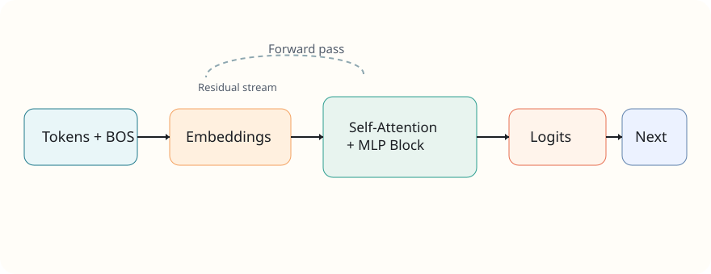

Data and tokenization
Characters become integer IDs, plus one BOS token to anchor sequence starts.
Pure Python. Full GPT loop.
This documentation breaks down Karpathy's
microgpt.py into the smallest conceptual units: dataset,
tokenizer, autograd, transformer, training loop, and sampling.
The implementation is intentionally compact. Each block corresponds to one fundamental model primitive.
Characters become integer IDs, plus one BOS token to anchor sequence starts.
A scalar Value class builds a graph and
backpropagates gradients recursively.
Single-layer multi-head attention, feed-forward blocks, and residual stream updates.
Forward pass, cross-entropy objective, backward pass, and parameter updates.
Names dataset is fetched if needed, shuffled, and split into character-level docs.
if not os.path.exists('input.txt'):
import urllib.request
urllib.request.urlretrieve(names_url, 'input.txt')
docs = [line.strip() for line in open('input.txt') if line.strip()]
random.shuffle(docs)Character set defines token IDs. BOS extends vocabulary for sequence starts.
uchars = sorted(set(''.join(docs)))
BOS = len(uchars)
vocab_size = len(uchars) + 1
Each operation records local derivatives, then
backward()
performs reverse topological traversal.
for v in reversed(topo):
for child, local_grad in zip(v._children, v._local_grads):
child.grad += local_grad * v.grad
Token embeddings and positional embeddings feed attention layers;
logits are projected by lm_head.
state_dict = {
'wte': matrix(vocab_size, n_embd),
'wpe': matrix(block_size, n_embd),
'lm_head': matrix(vocab_size, n_embd),
}
python microgpt.pyRuns dataset prep, training loop, and sample generation in one file.
n_layer = 2
n_embd = 32
n_head = 4Increase representational power while keeping code architecture unchanged.
docs = [line.strip() for line in open('my_corpus.txt') if line.strip()]Use a domain-specific dataset to generate new token distributions.
If these docs help you learn transformer internals, you can support ongoing maintenance and educational content.
Pick any option below. If you fork this docs template, replace these links with your own profiles.